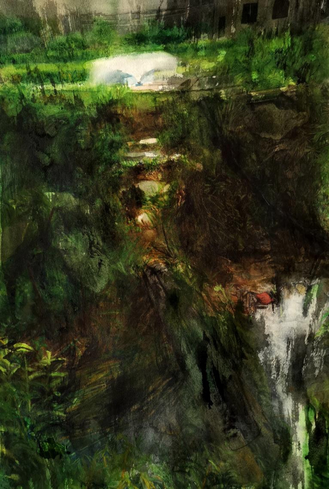

Deepening Moss
苔色正浓

- Artwork ID / 作品编号
- KW-W-000042
- Year / 年份
- 2022
- Medium / 媒介
- Watercolor on paper / 纸本水彩
- Dimensions / 尺寸
- 54 × 36 cm (H × W / 高 × 宽)
About the work / 作品介绍
An old drainage channel is gently covered with moss, while plants spread naturally across the damp earth. Sunlight filters through the trees, creating subtle variations of green and revealing the quiet richness hidden within an ordinary landscape. My work often focuses on the overlooked details of nature. Moss is neither brilliant like flowers nor towering like trees, yet it quietly covers the land with remarkable patience, preserving the traces of time, moisture, and life. What moves me is not the grandeur of nature, but the quiet presence of these humble forms of existence.
一处被岁月浸润的沟渠，青苔覆满石壁，植物沿着湿润的坡地自然生长。阳光从树梢间洒落，为浓郁的绿色带来层层变化，也让平凡的角落焕发出安静而丰盈的生命气息。 我始终关注自然中那些容易被忽略的细微景象。青苔没有花朵的绚丽，也没有树木的高大，却以最缓慢而坚定的方式覆盖土地，记录着时间、湿度与生命共同作用的痕迹。真正打动我的，并非壮丽的风景，而是这些平静而真实的存在。